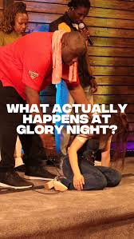

Worship Online
Watch Live
Join City4Christ services, worship sessions and special programmes from anywhere.

LIVESunday Worship ExperienceCity4Christ Main Auditorium
More to watch
View sermons Join City4Christ services, worship sessions and special programmes from anywhere.

LIVE